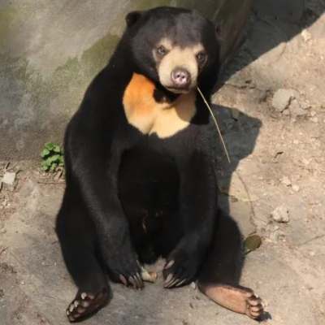
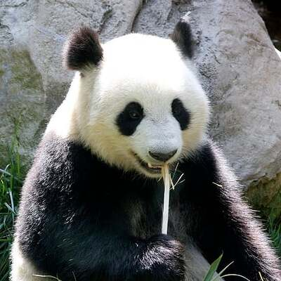
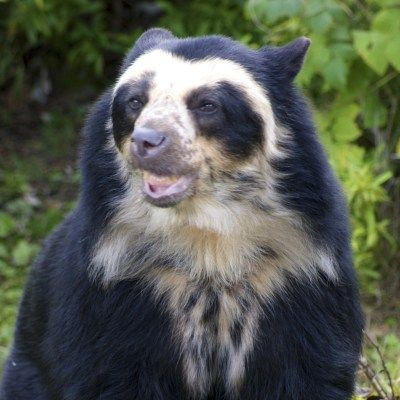
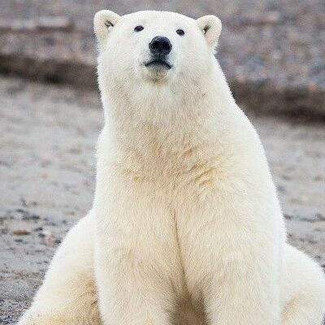
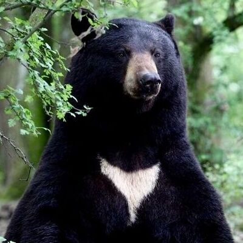
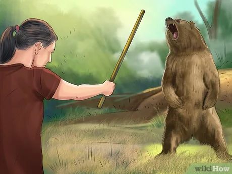

Panda Gigante
(Ailuropoda melanoleuca)

Urso-de-óculos
(Tremarctos ornatus)
Urso Pardo
(Ursus arctos)

Urso Polar
(Ursus maritimus)

Urso Preto Americano
Ursus americanus

Como sobreviver a um ataque de urso?
Em um ataque de urso, é crucial permanecer calmo e agir com racionalidade para aumentar suas chances de sobrevivência. Aqui estão algumas orientações gerais: